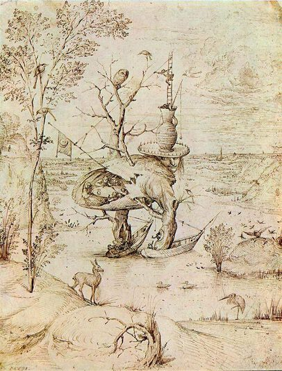

Hieronymus Bosch,1450 - 1516,Northern Renaissance,Dutch,"Hieronymus Bosch ( (listen); Dutch: [ɦijeːˈroːnimʏz ˈbɔs] (listen); born Jheronimus van Aken [jeːˈroːnimʏs fɑn ˈaːkə(n)]; c. 1450 – 9 August 1516) was a Dutch/Netherlandish draughtsman and painter from Brabant. He is one of the most notable representatives of the Early Netherlandish painting school. His work contains fantastic illustrations of religious concepts and narratives. Within his lifetime his work was collected in the Netherlands, Austria, and Spain, and widely copied, especially his macabre and nightmarish depictions of hell.",http://en.wikipedia.org/wiki/Hieronymus_Bosch,137
